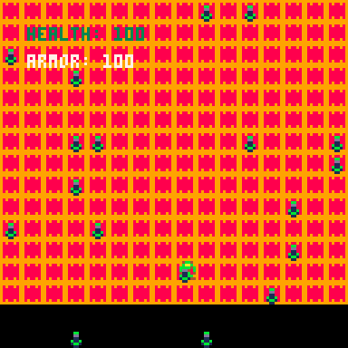

INSTRUCTIONS:
CONTROL SCHEME: Up/down/left/right arrow keys = Move Character
GOALS for current version:
1.) Walk through health pickups generated around the map to increase character health
2.) Walk to edges of map to see that the character is "boxed in" and cannot walk off screen
3.) No shooting mechanic implemented yet (will aim to get this feature done by the next demo)
